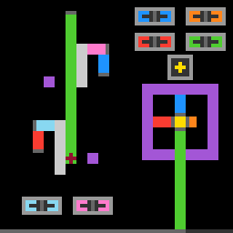

s5i5
Click to extend, retract and rotate coloured bars; the level is cleared when all tips land on diamond target centres.
8 levels · 19 rules · all levels replayed in Lean
Replay
The certified run that cleared every level, one action at a time. Beside each step: the rules of the model that explain it; they are also marked in the rule list below.

Explained by
Press Play or step to load the run. Keys, while the player is on screen: ← → step, Space play / pause. A click is circled; cells that changed are outlined.
How it plays
There are several coloured long bars on the board, with a grey cap at one end and the other end able to extend and retract; the cap of one bar hangs on another bar, strung into an arm, and the bar at the end carries a dark-red tip. The panels in the lower row each govern one colour: click the left icon and every bar of this colour retracts by 3 cells, click the right one and it extends by 3 cells; the bar that would press on the panel stays in place, and the others move as usual; the bars or walls hanging on the extending/retracting end are pushed away or dragged back along. Clicking a legend frame in the upper row makes the bars of this colour, together with the whole arm hanging behind it, rotate counterclockwise about the joint. The level is cleared when all the tips land on the centres of the diamond targets. In many cases this step is voided entirely: two things fight for the same cell, pressing on a purple fixed wall, retracting until the body is not enough, a pushed-away wall has nowhere to land, being unable to rotate through (pressing on the panel while rotating also counts).

Model
The final model: 5 object types and 19 rules. Each rule is a Python check against every recorded step; 17 of them are translated into Lean (the paper's per-game table). Code under a rule is the file of the same name in the agent's Lean project.
Object types
- Board
boardPanels, legend frames, diamond targets, joints and purple fixed walls; unchanged within a level.Lean · Board.lean
-- World.board : Board structure Board where panels : List Panel legends : List Legend diamonds : List Diamond hubs : List Hub fixed : List Rect deriving DecidableEq, Repr - Bars
barsColoured bars with a grey cap, hung cap-on-bar into arms; the last carries a tip.Lean · Bar.lean
-- World.bars : List Bar structure Bar where color : Nat r : Nat c : Nat dir : Dir len : Nat tip : Bool deriving DecidableEq, Repr - Pushable walls
wallsSolid rectangles in no bar; pushed or dragged when touching an extending or retracting end.Lean · Wall.lean
-- World.walls : List Wall structure Wall where color : Nat rect : Rect deriving DecidableEq, Repr - Counter row
spentThe bottom row, recording how many cells this level has spent.Python only - Uncertain boundary
unsureMarks frames where two same-colour bars meet end to end with an unseen boundary.Python only
Rules
free_end_movesClicking a panel icon extends or retracts every bar of that colour by 3 cells.Python
from __future__ import annotations from dataclasses import replace from derive.click import decode from derive.shape import unit from derive.step import predict_cached, unreadable_input from rule._common import find_bar, in_level, same_bar … … HISTORY = [ … … ] def grow(m) -> None: for i, b in enumerate(m.w.bars): if b.color != m.K or i in m.stopped: continue dr, dc = unit(b.dir) m.nb[i] = replace(b, length=b.length + m.s) m.grown[i] = (dr * m.s, dc * m.s) def scope_(w, action, ctx=None): if not in_level(ctx): … k, _ = decode(w.board, action) if k not in ("grow", "shrink"): … out = predict_cached(w, action) if out.kind != "moved": … why = unreadable_input(w, out) if why: return why if not out.move.grown: … return None def assert_(w, action, nw, ctx=None) -> bool: out = predict_cached(w, action) for i in out.move.grown: o = find_bar(nw, out.world.bars[i]) if o is None or not same_bar(out.world.bars[i], o): return False return TrueLean · FreeEndMoves.lean
import Rule.Stretch.Mark import Rule.Stretch.BoxStopsOneBar namespace Game def freeEndDir (b : Bar) (grow : Bool) : Dir := if grow then b.dir else b.dir.opp def stretchBar (b : Bar) (grow : Bool) : Bar := if grow then { b with len := b.len + 3 } else { b with len := b.len - 3 } def initMarks (bd : Board) (bars : List Bar) (K : Nat) (grow : Bool) : List (Bar × Mark) := bars.map (fun b => if b.color == K then (if grow && boxStops bd b then (b, .stopped) else (b, .grown (freeEndDir b grow))) else (b, .still)) end Gamechain_follows_free_endCaps and walls touching a moving end move too: pushed when extending, dragged when retracting.Python
from __future__ import annotations from derive.attach import bars_on_face, walls_on_face from derive.click import decode from derive.shape import face, moved_bar, moved_wall from derive.step import predict_cached, unreadable_input from rule._common import find_bar, in_level, same_bar … HISTORY = [ … … … … … ] … … def follow(m, v, f, color) -> None: q = [(v, f, color)] while q: v, f, color = q.pop() for j in bars_on_face(m.w.bars, f, color): if j in m.grown or j in m.movedb: continue m.movedb[j] = v m.nb[j] = moved_bar(m.w.bars[j], v) q.append((v, face(m.w.bars[j]), m.w.bars[j].color)) for j in walls_on_face(m.w.walls, f): if j not in m.movedw: m.movedw[j] = v m.nw[j] = moved_wall(m.w.walls[j], v) def follow_all(m) -> None: for i, v in list(m.grown.items()): b = m.w.bars[i] follow(m, v, face(b), b.color) def scope_(w, action, ctx=None): if not in_level(ctx): … k, _ = decode(w.board, action) if k not in ("grow", "shrink"): … out = predict_cached(w, action) if out.kind != "moved": … why = unreadable_input(w, out) if why: return why dragged = out.move.movedb or out.move.movedw if not dragged: … return None def assert_(w, action, nw, ctx=None) -> bool: out = predict_cached(w, action) m = out.move for j in m.movedb: o = find_bar(nw, m.nb[j]) if o is None or not same_bar(m.nb[j], o): return False return all(m.nw[j] in set(nw.walls) for j in m.movedw)Lean · ChainFollowsFreeEnd.lean
import Rule.Stretch.Mark import Obj.Derive.Attach namespace Game def dragBars (col : Nat) (d : Dir) (f : Rect) : List (Bar × Mark) → List (Bar × Mark) × List (Dir × Rect × Nat) | [] => ([], []) | (b, m) :: rest => let r := dragBars col d f rest if m.isStill && b.color != col && b.cap.meets f then ((b, .moved d) :: r.1, (d, b.face, b.color) :: r.2) else ((b, m) :: r.1, r.2) def dragWalls (d : Dir) (f : Rect) : List (Wall × Option Dir) → List (Wall × Option Dir) | [] => [] | (w, m) :: rest => (if m.isNone && w.rect.meets f then (w, some d) else (w, m)) :: dragWalls d f rest def follow : Nat → List (Dir × Rect × Nat) → List (Bar × Mark) → List (Wall × Option Dir) → List (Bar × Mark) × List (Wall × Option Dir) | 0, _, bs, ws => (bs, ws) | _ + 1, [], bs, ws => (bs, ws) | n + 1, (d, f, col) :: st, bs, ws => let r := dragBars col d f bs follow n (r.2.reverse ++ st) r.1 (dragWalls d f ws) def followFrom (fuel : Nat) : List (Bar × Mark) → List (Bar × Mark) → List (Wall × Option Dir) → List (Bar × Mark) × List (Wall × Option Dir) | [], bs, ws => (bs, ws) | (b, .grown d) :: rest, bs, ws => let r := follow fuel [(d, b.face, b.color)] bs ws followFrom fuel rest r.1 r.2 | _ :: rest, bs, ws => followFrom fuel rest bs ws def followAll (marks : List (Bar × Mark)) (walls : List Wall) : List (Bar × Mark) × List (Wall × Option Dir) := followFrom (marks.length + 1) marks marks (walls.map (fun w => (w, none))) end Gamebox_stops_one_barA bar that would extend into a panel or legend frame stays; others move.Python
from __future__ import annotations from dataclasses import replace from derive.click import decode from derive.shape import body_cells, box_cells from derive.step import predict_cached, unreadable_input from rule._common import find_bar, in_level, same_bar … HISTORY = [ … … ] def stopped(w, K: int, s: int) -> set: if s <= 0: return set() bx = box_cells(w.board) return {i for i, b in enumerate(w.bars) if b.color == K and body_cells(replace(b, length=b.length + s)) & bx} def scope_(w, action, ctx=None): if not in_level(ctx): … k, _ = decode(w.board, action) if k != "grow": … out = predict_cached(w, action) if out.kind != "moved": … why = unreadable_input(w, out) if why: return why if not out.move.stopped: … return None def assert_(w, action, nw, ctx=None) -> bool: out = predict_cached(w, action) for i in out.move.stopped: o = find_bar(nw, w.bars[i]) if o is None or not same_bar(w.bars[i], o): return False return TrueLean · BoxStopsOneBar.lean
import Obj.World namespace Game def boxStops (bd : Board) (b : Bar) : Bool := meetsAny ({ b with len := b.len + 3 }).body bd.boxes end Gameothers_stayBars and walls not moved this step stay exactly where they are.Python
from __future__ import annotations from derive.click import decode from derive.step import predict_cached, touched, unreadable_input from rule._common import find_bar, in_level, same_bar … HISTORY = [ … ] def scope_(w, action, ctx=None): if not in_level(ctx): … k, _ = decode(w.board, action) if k not in ("grow", "shrink", "rot"): … out = predict_cached(w, action) if out.kind not in ("moved", "rotated"): … why = unreadable_input(w, out) if why: return why return None def assert_(w, action, nw, ctx=None) -> bool: out = predict_cached(w, action) moved = touched(out) for i, b in enumerate(w.bars): if i in moved: continue o = find_bar(nw, b) if o is None or not same_bar(b, o): return False mw = set(out.move.movedw) if out.move is not None else set() keep = {x for j, x in enumerate(w.walls) if j not in mw} return keep <= set(nw.walls)Lean · OthersStay.lean
import Rule.Stretch.FreeEndMoves namespace Game def settleBar (grow : Bool) : Bar × Mark → Bar | (b, .grown _) => stretchBar b grow | (b, .moved d) => b.shift d | (b, .still) => b | (b, .stopped) => b def settleWall : Wall × Option Dir → Wall | (w, some d) => w.shift d | (w, none) => w end Gamelegend_rotates_chainClicking a legend frame rotates the arm counterclockwise about the joint until it fits.Python
from __future__ import annotations from dataclasses import replace from derive.attach import downstream, on_hub from derive.click import decode from derive.shape import bar_cells, box_cells, hub_cells, wall_cells from derive.step import Outcome, predict_cached, unreadable_input from objects.geometry.grid import CCW, inside, rot_pt, strip from rule._common import find_bar, in_level, same_bar … … HISTORY = [ … … … ] def pivot_and_roots(w, K): hubs = [h for h in w.board.hubs if h.color == K] if hubs: h = hubs[0] return (h.r + 1, h.c + 1), on_hub(w.bars, h) roots = [i for i, b in enumerate(w.bars) if b.color == K] if len(roots) != 1: return None, roots b = w.bars[roots[0]] return strip(b.r, b.c, b.dir, 1)[1], roots def turn(b, piv, k: int): cp = strip(b.r, b.c, b.dir, 0) d = b.dir for _ in range(k): cp = [rot_pt(p, piv) for p in cp] d = CCW[d] return replace(b, r=min(p[0] for p in cp), c=min(p[1] for p in cp), dir=d) def rotate(w, K) -> Outcome: … piv, roots = pivot_and_roots(w, K) if piv is None: … chain = downstream(w.bars, roots) others: set = set() for j, b in enumerate(w.bars): if j not in chain: others |= bar_cells(b) for h in w.board.hubs: others |= hub_cells(h) walls: set = set() for x in w.walls: walls |= wall_cells(x) boxes = box_cells(w.board) tried = [] for k in (1, 2, 3): nb = list(w.bars) for j in chain: nb[j] = turn(w.bars[j], piv, k) occ: set = set() caps_off = False for j in chain: occ |= bar_cells(nb[j]) caps_off |= any(not inside(*p) for p in strip(nb[j].r, nb[j].c, nb[j].dir, 0)) info = {"k": k, "fixed": bool(occ & w.board.fixed), "blocked": bool(occ & others or occ & walls or occ & boxes), "off": any(not inside(*p) for p in occ), "cap_off": caps_off} tried.append(info) v = refuse(info) rot = {"chain": chain, "pivot": piv, "tried": tried} if v == "refuse": … if v == "next": continue return Outcome("rotated", replace(w, bars=tuple(nb)), rot=rot) … rot={"chain": chain, "pivot": piv, "tried": tried}) def scope_(w, action, ctx=None): if not in_level(ctx): … k, _ = decode(w.board, action) if k != "rot": … out = predict_cached(w, action) if out.kind != "rotated": … why = unreadable_input(w, out) if why: return why return None def assert_(w, action, nw, ctx=None) -> bool: out = predict_cached(w, action) for j in out.rot["chain"]: o = find_bar(nw, out.world.bars[j]) if o is None or not same_bar(out.world.bars[j], o): return False return TrueLean · LegendRotatesChain.lean
import Obj.Derive.Attach import Rule.Refuse.RotationBlocked namespace Game def turnBar1 (pr pc : Nat) (b : Bar) : Bar := let cap := b.cap.rot pr pc { b with r := cap.r0, c := cap.c0, dir := b.dir.ccw } def turnBar (pr pc : Nat) : Nat → Bar → Bar | 0, b => b | k + 1, b => turnBar pr pc k (turnBar1 pr pc b) def turnAll (pr pc k : Nat) : List (Bar × Bool) → List Bar | [] => [] | (b, m) :: rest => (if m then turnBar pr pc k b else b) :: turnAll pr pc k rest def jointOf (b : Bar) : Nat × Nat := match b.dir with | .U => (b.r - 1, b.c + 1) | .D => (b.r + 1, b.c + 1) | .L => (b.r + 1, b.c - 1) | .R => (b.r + 1, b.c + 1) def pivotRoots (w : World) (K : Nat) : Option (Nat × Nat × List Bool) := match w.board.hubs.find? (·.color == K) with | some h => some (h.r + 1, h.c + 1, w.bars.map (fun b => meetsAny b.cap h.ring)) | none => match w.bars.filter (·.color == K) with | [b] => some ((jointOf b).1, (jointOf b).2, w.bars.map (·.color == K)) | _ => none def turnInfo (w : World) (pr pc k : Nat) (chain : List (Bar × Bool)) : Bool × Bool × Bool × Bool := let moved := (chain.filter (·.2)).map (fun p => turnBar pr pc k p.1) let others := (chain.filter (fun p => !p.2)).map (fun p => p.1.whole) ++ w.board.hubs.map Hub.rect ++ w.walls.map (·.rect) ++ w.board.boxes (moved.any (fun b => meetsAny b.whole w.board.fixed), moved.any (fun b => meetsAny b.whole others), moved.any (fun b => !b.whole.onBoard), moved.any (fun b => !b.cap.onBoard)) def tryTurn (w : World) (pr pc : Nat) (chain : List (Bar × Bool)) : Nat → Nat → Res | _, 0 => .refused | k, n + 1 => match turnInfo w pr pc k chain with | (fx, bl, off, co) => match verdict k fx bl off co with | .refuse => .refused | .next => tryTurn w pr pc chain (k + 1) n | .accept => .ok { w with bars := turnAll pr pc k chain } def rotate (w : World) (K : Nat) : Res := match pivotRoots w K with | none => .silent | some (pr, pc, roots) => tryTurn w pr pc (w.bars.zip (downstream w.bars roots)) 1 3 end Gameall_tips_home_advancesA level clears exactly when tips sit on all target centres, none elsewhere.Python
from __future__ import annotations from derive.shape import centers, tip_cell from derive.step import predict_cached, unreadable_input … … HISTORY = [ … … … … ] def goal(w) -> bool: ts = {tip_cell(b) for b in w.bars if b.tip} return ts == centers(w.board) def scope_(w, action, ctx=None): if ctx is None or ctx.get("mark") not in ("ok", "levelup"): … out = predict_cached(w, action) if out.world is None: … why = unreadable_input(w, out) if why: return why return None def assert_(w, action, nw, ctx=None) -> bool: out = predict_cached(w, action) return goal(out.world) == (ctx["mark"] == "levelup")Lean · AllTipsHome.lean
import Obj.World namespace Game def tips (w : World) : List (Nat × Nat) := (w.bars.filter (·.tip)).map Bar.tipCell def isGoal (w : World) : Bool := (tips w).all (fun t => (w.board.centers).contains t) && (w.board.centers).all (fun c => (tips w).contains c) end Gamelanding_blocked_refusesTwo things on one cell void the whole step; extending never pushes an obstacle aside.Python
from __future__ import annotations from collections import Counter from derive.shape import bar_cells, hub_cells, wall_cells from rule._common import refusal_scope, unchanged … HISTORY = [ … … … ] … … … def refuses(m) -> bool: occ = Counter() for b in m.nb: for p in bar_cells(b): occ[p] += 1 for x in m.nw: for p in wall_cells(x): occ[p] += 1 for h in m.w.board.hubs: for p in hub_cells(h): occ[p] += 1 return any(v > 1 for v in occ.values()) def scope_(w, action, ctx=None): return refusal_scope(w, action, ME, ctx) def assert_(w, action, nw, ctx=None) -> bool: return unchanged(w, nw)Lean · LandingBlocked.lean
import Obj.World namespace Game def anyPairMeets : List Rect → Bool | [] => false | x :: xs => meetsAny x xs || anyPairMeets xs def landingBlocked (bd : Board) (bars : List Bar) (walls : List Wall) : Bool := anyPairMeets (bars.map Bar.whole ++ walls.map (·.rect) ++ bd.hubs.map Hub.rect) end Gamefixed_blocks_refusesBars or walls on a purple fixed wall, panel or legend frame void the step.Python
from __future__ import annotations from derive.shape import bar_cells, box_cells, wall_cells from rule._common import refusal_scope, unchanged … … HISTORY = [ … … ] … def refuses(m) -> bool: bad = m.w.board.fixed | box_cells(m.w.board) for b in m.nb: if bar_cells(b) & bad: return True return any(wall_cells(x) & bad for x in m.nw) def scope_(w, action, ctx=None): return refusal_scope(w, action, ME, ctx) def assert_(w, action, nw, ctx=None) -> bool: return unchanged(w, nw)Lean · FixedBlocks.lean
import Obj.World namespace Game def fixedBlocks (bd : Board) (bars : List Bar) (walls : List Wall) : Bool := let bad := bd.fixed ++ bd.boxes bars.any (fun b => meetsAny b.whole bad) || walls.any (fun w => meetsAny w.rect bad) end Gametoo_short_refusesIf any bar of the colour would retract below 2 segments, no bar retracts.Python
from __future__ import annotations from rule._common import refusal_scope, unchanged … HISTORY = [ … … ] … def refuses(w, K: int, s: int) -> bool: return s < 0 and any(b.color == K and b.length + s < 2 for b in w.bars) def scope_(w, action, ctx=None): return refusal_scope(w, action, ME, ctx) def assert_(w, action, nw, ctx=None) -> bool: return unchanged(w, nw)Lean · TooShort.lean
import Obj.World namespace Game def tooShort (bars : List Bar) (K : Nat) (grow : Bool) : Bool := !grow && bars.any (fun b => b.color == K && Nat.blt b.len 5) end Gamedragged_off_board_refusesIf a dragged bar's cap would leave the board, the step is voided.Python
from __future__ import annotations from derive.shape import cap_cells from objects.geometry.grid import inside from rule._common import refusal_scope, unchanged … HISTORY = [ … … … ] … def refuses(m) -> bool: return any(not inside(*p) for j in m.movedb for p in cap_cells(m.nb[j])) def scope_(w, action, ctx=None): return refusal_scope(w, action, ME, ctx) def assert_(w, action, nw, ctx=None) -> bool: return unchanged(w, nw)Lean · DraggedOffBoard.lean
import Rule.Stretch.Mark namespace Game def draggedOffBoard (marks : List (Bar × Mark)) : Bool := marks.any (fun | (b, .moved d) => !(b.shift d).cap.onBoard | _ => false) end Gamewall_onto_target_refusesPushing a wall onto a target centre or its four dots voids the step.Python
from __future__ import annotations from derive.shape import target_cells, wall_cells from rule._common import refusal_scope, unchanged … HISTORY = [ … … ] … def refuses(m) -> bool: if m.s <= 0: return False tc = target_cells(m.w.board) return any(wall_cells(m.nw[j]) & tc and not (wall_cells(m.w.walls[j]) & tc) for j in m.movedw) def scope_(w, action, ctx=None): return refusal_scope(w, action, ME, ctx) def assert_(w, action, nw, ctx=None) -> bool: return unchanged(w, nw)Lean · WallOntoTarget.lean
import Obj.World namespace Game def wallOntoTarget (bd : Board) (grow : Bool) (ws : List (Wall × Option Dir)) : Bool := grow && ws.any (fun | (w, some d) => meetsAny (w.shift d).rect bd.targets && !meetsAny w.rect bd.targets | _ => false) end Gamerotation_blocked_refusesFixed walls, leaving the board, or all three angles blocked void the rotation.Python
from __future__ import annotations from rule._common import refusal_scope, unchanged … HISTORY = [ … … … … ] … def verdict(info: dict) -> str: if info["fixed"]: return "refuse" if info["blocked"]: return "next" if info["cap_off"]: return "refuse" if info["off"] and info["k"] > 1: return "refuse" return "accept" def scope_(w, action, ctx=None): return refusal_scope(w, action, ME, ctx) def assert_(w, action, nw, ctx=None) -> bool: return unchanged(w, nw)Lean · RotationBlocked.lean
import Obj.World namespace Game inductive Verdict where | refuse | next | accept deriving DecidableEq, Repr def verdict (k : Nat) (fixed blocked off capOff : Bool) : Verdict := if fixed then .refuse else if blocked then .next else if capOff then .refuse else if off && Nat.blt 1 k then .refuse else .accept end Gameclick_elsewhere_does_nothingClicking anywhere except icons and legend frames moves nothing.Python
from __future__ import annotations from derive.click import decode from rule._common import in_level, unchanged … … def scope_(w, action, ctx=None): if not in_level(ctx): … k, _ = decode(w.board, action) if k not in ("none", "panel"): … return None def assert_(w, action, nw, ctx=None) -> bool: return unchanged(w, nw)Lean · ClickElsewhere.lean
import Obj.World namespace Game def clickElsewhere (w : World) : Res := .ok w end Gameboard_unchangedPanels, legend frames, diamond targets, joints and fixed walls never change within a level.Python
from __future__ import annotations … HISTORY = [ … … ] def scope_(w, action, ctx=None): if ctx is None or ctx.get("mark") != "ok": … return None def assert_(w, action, nw, ctx=None) -> bool: return nw.board == w.boardLean · BoardUnchanged.lean
import Step namespace Game theorem tryTurn_board (w w' : World) (pr pc : Nat) (ch : List (Bar × Bool)) : ∀ k n, tryTurn w pr pc ch k n = .ok w' → w'.board = w.board := by intro k n induction n generalizing k with | zero => intro h; simp [tryTurn] at h | succ n ih => intro h simp only [tryTurn] at h split at h <;> first | exact ih _ h | (simp at h; subst h; rfl) | simp at h theorem rotate_board (w w' : World) (K : Nat) (h : rotate w K = .ok w') : w'.board = w.board := by simp only [rotate] at h split at h · simp at h · exact tryTurn_board w w' _ _ _ 1 3 h theorem stretch_board (w w' : World) (K : Nat) (g : Bool) (h : stretch w K g = .ok w') : w'.board = w.board := by unfold stretch at h split at h · exact Res.noConfusion h · split at h split at h · exact Res.noConfusion h split at h · exact Res.noConfusion h split at h · exact Res.noConfusion h split at h · exact Res.noConfusion h injection h with h subst h rfl theorem board_unchanged (w w' : World) (a : Act) (h : step w a = .ok w') : w'.board = w.board := by cases a with | reset => simp [step] at h | click x y => simp only [step] at h split at h · exact stretch_board w w' _ _ h · exact stretch_board w w' _ _ h · exact rotate_board w w' _ h · simp only [clickElsewhere] at h; cases h; rfl end Gamerotation_keeps_lengthRotation keeps every turned bar's length, and the tip stays.Python
from __future__ import annotations from derive.click import decode from derive.step import predict_cached, unreadable_input from rule._common import find_bar, in_level … HISTORY = [ … … ] def scope_(w, action, ctx=None): if not in_level(ctx): … if decode(w.board, action)[0] != "rot": … out = predict_cached(w, action) if out.kind != "rotated": … return unreadable_input(w, out) def assert_(w, action, nw, ctx=None) -> bool: out = predict_cached(w, action) for j in out.rot["chain"]: o = find_bar(nw, out.world.bars[j]) if o is None: return False if o.clipped: if o.length > w.bars[j].length: return False continue if o.length != w.bars[j].length or o.tip != w.bars[j].tip: return False return TrueLean · RotationKeepsLength.lean
import Step namespace Game theorem turnBar_keeps (pr pc : Nat) : ∀ (k : Nat) (b : Bar), (turnBar pr pc k b).len = b.len ∧ (turnBar pr pc k b).tip = b.tip ∧ (turnBar pr pc k b).color = b.color := by intro k induction k with | zero => intro b; simp [turnBar] | succ k ih => intro b simp only [turnBar] have := ih (turnBar1 pr pc b) simp only [turnBar1] at this exact this theorem rotation_keeps_length (pr pc k : Nat) (b : Bar) : (turnBar pr pc k b).len = b.len ∧ (turnBar pr pc k b).tip = b.tip ∧ (turnBar pr pc k b).color = b.color := turnBar_keeps pr pc k b end Gametip_rides_free_endAfter extending or retracting, the tip stays one cell from the bar's end.Python
from __future__ import annotations from derive.click import decode from derive.step import predict_cached, unreadable_input from rule._common import find_bar, in_level … HISTORY = [ … … … ] def scope_(w, action, ctx=None): if not in_level(ctx): … if decode(w.board, action)[0] not in ("grow", "shrink"): … out = predict_cached(w, action) if out.kind != "moved": … if not any(w.bars[i].tip for i in out.move.grown): … return unreadable_input(w, out) def assert_(w, action, nw, ctx=None) -> bool: out = predict_cached(w, action) for i in out.move.grown: if not w.bars[i].tip: continue o = find_bar(nw, out.world.bars[i]) if o is None or (not o.tip and not o.clipped): return False return TrueLean · TipRidesFreeEnd.lean
import Step namespace Game theorem tip_rides_free_end (b : Bar) (hl : 1 ≤ b.len) : (stretchBar b true).tip = b.tip ∧ (stretchBar b true).tipCell = b.dir.go 3 b.tipCell.1 b.tipCell.2 := by refine ⟨by simp [stretchBar], ?_⟩ cases hd : b.dir <;> simp only [stretchBar, Bar.tipCell, Dir.go, hd, if_true] <;> (apply Prod.ext <;> simp <;> omega) end Gamelevelup_step_is_effectiveThe step that clears a level is never a voided click.Python
from __future__ import annotations from derive.step import predict_cached … HISTORY = [ … … … … ] def scope_(w, action, ctx=None): if ctx is None or ctx.get("mark") != "levelup": … if w.unsure: … return None def assert_(w, action, nw, ctx=None) -> bool: return predict_cached(w, action).kind in ("moved", "rotated")Lean · LevelupStepIsEffective.lean
import Obs.Check namespace Game theorem levelup_step_is_effective (w w' : World) (a : Act) (h : after w a = some w') (hg : isGoal w' = true) (h0 : isGoal w = false) : step w a ≠ .refused := by intro hr simp only [after, hr] at h cases h rw [h0] at hg exact Bool.noConfusion hg end Gamecounter_burnsThe counter row never decreases within a level, growing at most 2 cells per step.Python onlyPython
from __future__ import annotations … … HISTORY = [ … … ] def scope_(w, action, ctx=None): if ctx is None or ctx.get("mark") != "ok": … return None def assert_(w, action, nw, ctx=None) -> bool: return 0 <= nw.spent - w.spent <= 2reset_restores_level_startReset returns bars, walls and board to the level's first frame, with the counter cleared.Python onlyPython
from __future__ import annotations from rule._common import pieces_equal … … … … def scope_(w, action, ctx=None): if ctx is None or ctx.get("mark") != "reset": … if ctx.get("start") is None: … return None def assert_(w, action, nw, ctx=None) -> bool: st = ctx["start"] return pieces_equal(st, nw) and nw.board == st.board and nw.spent == 0
Code is shown with comments and the agent's notes removed; the files as written are in the archive under Check it yourself.
Proof
For every level, Lean starts from the level's first screen, applies the model's rules to the certified actions, and checks that every computed state agrees with the recorded frame on the components the model represents, and that the last one wins. Each theorem is closed by the Lean kernel and is a statement about the learned model.
Every level can be won
theorem L0_winnable : Winnable (L0_start : World) := …theorem L1_winnable : Winnable (L1_start : World) := …theorem L2_winnable : Winnable (L2_start : World) := …theorem L3_winnable : Winnable (L3_start : World) := …theorem L4_winnable : Winnable (L4_start : World) := …theorem L5_winnable : Winnable (L5_start : World) := …theorem L6_winnable : Winnable (L6_start : World) := …theorem L7_winnable : Winnable (L7_start : World) := …Statements only; the proofs and the full Lean project are in the archive, with the steps to re-run them, under Check it yourself.
Check it yourself
Everything on this page comes from files you can download and check. The archive holds the agent's files: the recorded run, the concept book, the concept sources, the Lean project and the sealed model file, plus the record of our kernel check.
Download s5i5.zip 1.0 MB · 111 files
Re-run the proof
Before you start: our run of this check took 385 s and 8.4 GB of memory at its peak (2026-10-24).
- Download s5i5.zip and unpack it. The model and its theorems are in
archive/s5i5-20260910/formal/Game.lean. Before changing it, check that its SHA-256 is24d450734f2731684cf6e56ba60acaa6148fa05df9afecd0987f9ba4b69aaaa6 - Install Lean with elan, then the version named in the archive's
lean-toolchain:elan toolchain install leanprover/lean4:v4.34.0 - Copy the model file to
Check.leanand append these two lines to the copy:#print axioms consistent #print axioms faithful - In the folder that holds
Check.lean, run:lean +leanprover/lean4:v4.34.0 -M60000 Check.lean - Lean should finish without errors and print:
The first line is printed by the file itself: for each rule, how many recorded transitions meet its condition.GUARD_HITS counter_burns_monotone=1163,move_counter_row63=1163,counter_step_rate=1081,diamond_dots_immutable=1163,panels_static=1163,fixed_color_never_moves=1163,walls_immutable=1198,wall_size_constant_in_level=1163,segments_never_on_walls=1163,bar_free_end_moves=1026,every_blob_moves_on_its_own_axis=161,per_bar_adjudication=3,chain_drags_downstream=582,button_owns_one_bar=1026,bar_tip_follows=403,tip_bar_carries_nothing=293,shrink_drags_cap_contact=175,blocking_seg_is_pushed=407,wall_sticks_to_free_end=151,chain_push_drags_touching_bar=72,shrink_to_nothing_refuses=4,shrink_at_min_length_refuses=4,blocked_push_refuses=15,wedge_refuses_click=2,drag_into_obstacle_refuses=5,click_refused_when_seg_lands_on_wall=2,seg_landing_collides=26,same_color_bars_collide_refuses=3,push_chain_blocked_refuses=16,refused_says_it_exactly=1155,legend_click_rotates_chain_ccw=72,legend_rotates_bar_about_joint=72,rotation_preserves_visible_length=63,fixed_obstacle_blocks_rotation=3,levelup_when_all_home=20,no_levelup_unless_home=1163,frame_determines_next_off_counter=1158 'consistent' depends on axioms: [propext] 'faithful' depends on axioms: [propext]
What a pass establishes
consistent: for every recorded transition, as read by the agent's parser and with duplicates removed, every rule whose condition holds also has its effect hold. faithful: the certified run, recomputed step by step from the first screen of each level, matches the record and ends in a win. Axioms used: propext, all among Lean's standard ones.
What it does not establish: that the parser reads the screens correctly (that step runs in Python, outside Lean), or that a rule whose condition never occurs in the record is right. The Python file that produced the readings inside the model file is in the archive at meta/repair-20260928/lib/s5i5-20260910/_lib.py.